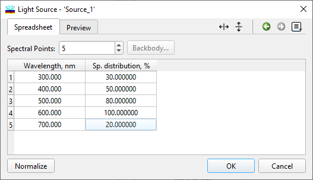
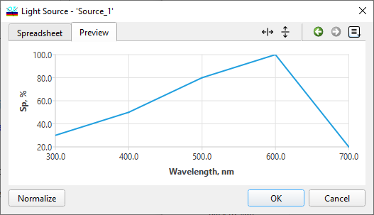

Light Source/Detector Database
Light Source/Detector Database
The Light Source and Detector databases in OptiLayer store the spectral power distributions of light sources and detectors. These databases are utilized in the Color Evaluation feature of OptiLayer, and can be optionally employed during the calculations of transmittances and reflectances for coatings. Access these settings through the Source/Detector/Cone/Integral page in the General Configuration dialog.
Within the Light Source/Detector window, users can define the spectral distribution of a light source. Light source power distributions are determined by their relative intensities across different wavelengths. When using the Spreadsheet tab in the window, the field labeled “Spectral points” in the upper section allows users to specify the number of spectral points where light source data will be entered. The lower section of the window presents a spreadsheet format for inputting and editing data, where users can enter wavelength values and their corresponding spectral power values. This information is essential for accurately defining the spectral characteristics of the light source.

To customize the spectral distribution of a light source in the Light Source/Detector window, follow these steps:
Set the desired number of Spectral points in the edit field located at the top of the window.
Manually enter the desired values or utilize the Spreadsheet Editing Tools to modify the data within the spreadsheet format provided.
Use the Blackbody…button to generate a light source with a spectrum corresponding to that of a blackbody with a specified temperature (in Kelvin). The spectrum is normalized, ensuring that the highest intensity is set to 100%.
Utilize the Normalize button to adjust an arbitrary spectrum so that the maximum value of the spectral distribution is set to 100%.
Navigate to the Preview tab to visually observe the spectral characteristics of the light source data. This feature allows users to visually inspect the spectral properties of the defined light source.

|
Note: Within the Catalog feature, users can access data files containing information on various standard light sources and detectors. These files provide standardized spectral data for common light sources and detectors, offering convenient and readily available reference points for spectral distributions. |